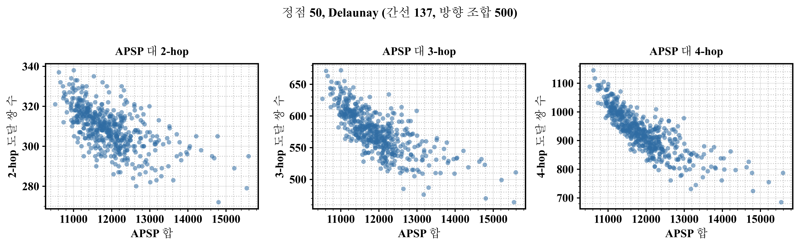

서론
졸업과제가 마무리 되어간다.
한 것들을 정리하자.
메타데이터
- 기간: 2026-02 ~ 2026-09
- 참여인원: 본인 이외 네 명
- 깃헙 주소: https://github.com/quantum-guardians
본론
연구 목적
+ 무방향 그래프의 방향화를 통해 강연결을 유지하면서 모든 정점 간의 거리를 최소로 하는 해를 찾고자 함
+ 이를 통해 혼잡한 상황(ex. 공연 후 퇴장, 축제 기간)에서 안전한 보행을 도모하고자 함
+ QA를 이용해 변화하는 도로 상황을 반영하여 빠르게 계산하여 실질적인 이득을 보고자 함
+ 정리: 그래프에서 모든 정점 사이의 거리가 최소가 되는 강연결 조합 찾기
기존 연구
+ 어떤 그래프에서 강연결이 존재하는 지는 Robbins 정리에 있음
+ 1939년 증명
+ 그래프가 연결되어 있고, 다리가 없을 시 존재
+ dfs로 구하기 가능
+ 해당 문제는 NP-hard 임이 밝혀져 있음
+ ref: Burkard, R.E., Feldbacher, K., Klinz, B., Woeginger, G.J. (1999). Minimum-cost strong network orientation problems: Classification, complexity, and algorithms. _Networks_, 33(1), 57–70.
+ Strong Network Orientation Problem(SNOP)이란 이름으로 간헐적으로 연구 진행 중
+ Duhamel and Santos (2022)
+ 수리 모형 정식화와 메타휴리스틱 함께 $제시
+ 도로에 대해서는 연구가 많다
+ 간선을 특정 비율로 나누어서 생각하는 방식
+ 도로 통제 상황에서 도로망 방향 재설정
+ 격자형 도시 도로망의 일방통행 최적화
정리
+ 목적 함수 - 모든 정점 거리합의 최소
+ 계산 방식 - qubo를 통한 qa 사용(이후 qubo 설명)
+ 목표 - 고전적인 방식과 비교하여 짧은 시간과 합리적인 해 산출
문제점
- 모든 식을 qa 하드웨어에 올릴 수 없음
- 양자 하드웨어는 이진 변수로 이루어진 이차항만 올릴 수 있음
- qubo(quadratic unconstrained binary operation) 아래와 같은 형태를 가짐
- \(f(x)=\sum_{i=1}^{N}\sum_{j=1}^{N} Q_{i,j}\,x_i x_j+\sum_{i=1}^{N} c_i x_i+d\)
- 이와 같은 형태가 아니면 qa(quantum annealing)를 사용하지 못함
- brute force 방식
- 강연결인 해 하나 구하기
- distance 합 구하기 (APSP)
- 이를 반복하여 제일 좋은 해 찾기
- 시간복잡도 - \(O\!\left(2^{|E|} \cdot |V|\,|E|\,\log|V|\right)\)
- \(V\): 정점 집합, \(|V|\): 정점 개수
- \(E\): 간선 집합, \(|E|\): 간선 개수
- 지수 시간이 걸리므로 큰 그래프에서 사실상 불가능
- MILP 정식화 존재
- 목적함수 = All Pairs Shortest Path(APSP) 합
- Gurobi 등의 솔버로 해결 가능
- 하지만, 여전히 지수시간 + qa에 못올리는 형식
- 치환 가능하나 변수가 폭증
- APSP를 목적 함수로 사용 불가능
- 최단 거리는 출발점부터 도착점까지 가는 모든 경로의 변수를 한꺼번에 생각해야함
- 이를 다항식으로 표현하면 차수가 간선 수 규모까지 상승
- 보조 변수로 차수 낮추기는 가능하지만 MILP와 동일하게 변수 폭증
- 양자 하드웨어는 이진 변수로 이루어진 이차항만 올릴 수 있음
- 바뀌는 도로 상황에 맞추어 빠르게 계산이 가능해야 함.
- 한 간선에 대해 가중치가 변하면 고전적인 방식에선 전부 다시 계산 해야 함
핵심 아이디어
+ n-hop 대리지표
+ APSP 합은 고차 다항식이므로, 이 자체를 qa의 목적함수로 사용할 수 없어서 이를 대리하는 목적함수가 필요
+ hop은 한 점 \(u\)에서 다른 점 \(v\)로 가는 데 거치는 간선을 표현
+ \(u \rightarrow v\)가 간선 2개를 거치면 2-hop
+ 다음과 같은 실험 결과로 대리 할 수 있음을 실험적으로 확인
+ 무작위 들뢰네 평면 그래프 (V = 50, E = 137) 생성
+ 이 중 강연결을 이루는 경우를 500개 선정
+ APSP 합(x축)이 낮아질 수록 n-hop의 도달 쌍 수(y축)가 많아지고 있음
+ 목적함수인 APSP 합과 n-hop이 음의 상관관계를 가지므로 대리함수로 적격
+ 결론 - apsp 합 최소화 -> n-hop 수 최대화로 치환
+ 아래는 해당 결과

+ n-hop qubo 표현
+ 2-hop과 3-hop을 함수로 사용
+ 4-hop 이상부터는 표현은 가능하지만, 이차로 낮추기 위한 치환 작업에서 변수가 급증해서 효율이 떨어짐
+ 목적함수는 아래와 같이 표현 및 qubo 화
+ \(H_{\mathrm{dist}}= -\sum_{e_{ik},\, e_{kj}} I_{i \to k}\, I_{k \to j}\;-\; \sum_{e_{ij},\, e_{jk},\, e_{kl}} I_{i \to j}\, I_{j \to k}\, I_{k \to l}\)
+ 가중치 버전
+ \(H_{\mathrm{dist}} = -\sum_{e_{ik},\, e_{kj}} w_{ik}\, w_{kj}\, I_{i \to k}\, I_{k \to j} \;-\; \sum_{e_{ij},\, e_{jk},\, e_{kl}} w_{ij}\, w_{jk}\, w_{kl}\, I_{i \to j}\, I_{j \to k}\, I_{k \to l}\)
+ 가중치는 높을 수록 좋다고 가정
+ 3-hop이 과대평가 될 가능성 존재
+ 0/1 변수는 indicator 함수를 사용하여 각 정점의 번호 기준으로 0과 1로 표현
+ \(I_{i \to j} =\begin{cases}1 - x_{ij}, & i < j \\x_{ji}, & i > j\end{cases}\)
+ 3-hop으로 인한 식은 구조적으로 삭제
+ \((1-x_1)(1-x_2)(1-x_3) + x_1 x_2 x_3= 1 - x_1 - x_2 - x_3 + x_1 x_2 + x_1 x_3 + x_2 x_3\)
+ 2차식 qubo 표현 완료
+ 대리함수 최적화 이후 APSP 합 표현식
+ \(\mathrm{stretch} = \frac{1}{|P|} \sum_{(s,t) \in P} \frac{d_{G'}(s,t)}{d_{G}(s,t)} \;\in\; [1,\infty)\)
+ 시그마 안 분모는 무방향일 때 그래프의 APSP 합
+ 결과에서 강연결 실패 시 무한대로 발산
+ 최종 형태
+ \(H(x) = c + \sum_{a} h_a\, x_a + \sum_{a<b} J_{ab}\, x_a x_b\)
파이프라인
flowchart LR
A["그래프 전처리"] --> B["QUBO화"] --> C["QA 진행"] --> D["결과 확인"]
그래프 전처리
+ 큰 그래프는 한 번에 qa 하드웨어에 넣을 수 없음
+ TODO 결과 나오면 어디까지 통상적으로 넣을 수 있는 지 확인
+ 그래서 면 단위로 그래프를 분할할 필요가 있음
#### 면 분할
+ 그래프를 \(k\)개의 면으로 분할
+ 면끼리 연결되어 면과 면 사이를 진행할 수 있다고 가정
+ 각각의 큰 면들을 정점으로 하여 생기는 쌍대 그래프 \(G^{\prime}\) 이라 가정
+ 면 분할 시에 해당 그래프가 dual partite 성질을 만족하도록 분할하여 면과 면 사이 도달을 보장
+ dual partite를 만족함으로 각 큰 면의 외곽선을 시계 방향, 반 시계 방향으로 방향을 선확정
+ 이렇게 되면 각 면에서 외곽에 도착하면 다른 면으로 갈 수 있음이 보장
+ 알고리즘은 다음을 이용
+ \(k\)개의 면 그래프를 qa를 진행하여 강연결을 보장